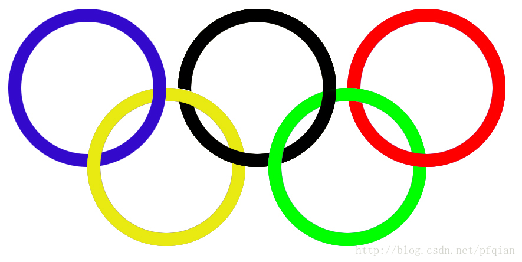

Photoshop学习总结
- 移动工具(V) 按住cmd+图层可以为该图层建立选区
- 选框工具(M) 主要有矩形选框和圆形选框，建立一个选区，对选区内的图像进行操作
shift增加选区，opt减少选区，shift+opt求选区交集
- 套索工具(L)
可以使用磁性套索+多边形套索来对尖锐形状建立选区
- 魔棒工具(W) 配合快速选择工具可以快速建立选区
- 裁剪工具(C) 切片工具可以对图层进行切片最后导出到文件夹
- 取色工具(I)
- 修复画笔工具(J) 污点修复画笔工具——去除污点 修复画笔工具——按opt取某一点为源点，在另一个地方将该处修补回来
- 画笔工具(B) 可以调节硬度来改变边缘效果
- 仿制图章工具(S) 与修复画笔不同的是，这个工具边缘不会羽化
- 历史记录画笔工具(Y) 将某一个历史记录作为图层来对现有图层进行修补
- 橡皮擦工具(E)
- 渐变工具(G) 可以用来制作彩虹色
- 模糊工具
- 减淡工具(o) 适用将面部美白
- 钢笔工具(P) 用来描绘路径
- 横排文字工具(T) 插入文字
- 路径选择工具(A)
- 矩形选择工具(U)
一些小技巧
- del删除选区
- opt+del填充前景色
- cmd+del填充背景色
- cmd+点击图层可以建立选区
- 文件->脚本->将图层导出，可以精确切图
利用选区可以实现遮盖效果，画圆时按住opt可以画同心圆，按住shift可以画正圆
